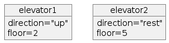

Software Development Lifecycle (SDLC) tools¶
Questions
- What are the key concepts and steps in the SDLC
- What are the tools for a project?
Content
- Introduction to some SDLC key features
- Theory of project tools and thinking
Learning outcomes of 'SDLC tools'
Learners can
- compare and contrast various software development tools.
- justify their relevance to specific development tasks.
- can give a reason for the benefits of the different tools for the SDLC
Instructor notes
Prerequisites are:
- Understanding the Software development Life Cycle
Lesson Plan:
- Total 30 min
- Theory 20
- Discussions 10 min
Some SDLC models¶
More In Software Development Life Cycle lesson
Waterfall model
- Requirements
- Analysis and design
- Development
- Test
- Deployment and maintenance
flowchart
Requirements --> A["Analysis and design"] --> Development --> Test --> D["Deployment and maintenance"] -.-> Requirements- Good approach for small and simple systems where the team knows the system and requirements very well.
Other Models
- Modern principles:
- automated tests, continuous integration (CI)
- Deliver as fast as possible:
- small iterations are easier to manage
- Extreme Programming
- Pair programming
- Test-driven development
Summary
- Each team has unique requirements
- Don’t be afraid of trial and error
- More info in Software Development Lifecycle tomorrow
In this course¶
The tools/concepts for Developing in scientific computing
Good enough practices for Developing in Scientific computing. Wilson et al. 2017
- Good tools and practices for refactoring and development steps
- Focus on scientific computing
The Phases/practices to be covered!
- Project organisation
- Planning (extended by Waterfall steps)
- Requirements
- Analysis
- Design
- Software development practices
- Tracking changes
- Collaborate
Project organization
- folder structure
Software development practices
- explanations
- naming
- eliminate duplication --> libraries
- dependencies
- DOI
Tracking changes
- For instance Git/Github
Collaborate
- GitHub
- documentation
- to-do lists
- strategies
- license
- citable
Tools to use¶
Project planning¶
WHY?
- "If I had 6 hours to chop down a tree, I'd spend the first 4 sharpening my axe." (Abraham Lincoln?)
- Modelling sharpens your axe since it helps you think about what you're going to build, how to seek feedback, and where to make improvements.
- It prepares you to build the real thing to reduce any potential risk of failure.
- find out the requirements what the program shall do
- risk analysis
- get an overview of the project/program.
- help planning writing the code
- identify parts needed
Tools for analysis
Analysis part is to state the problem and define inputs and outputs
- Graphical tools like UML (Unified Modeling Language)
- text
- if object-oriented programming: objects
Tools for design
Find out the specific algorithms needed
- UML and/or pseudocode
- if object-oriented programming: classes
- if functional programming: functions/modules
UML¶
-
More this afternoon
Example of Algorithm flow chart
flowchart TD
condition{Is something true?}
condition --> |yes| is_true[Do action 1]
condition --> |no| is_false[Do action 2]Mermaid code
shape of boxes etc in flowchart and state diagrams
- initial state (small circle)
[*]
- end state (small solid-filled circle)
[*]
- state (rectangle)
A["text"]
- activity (rounded recatngle)
A("text")
- choice (diamond)
A{"text"}
- arrow
-->
Software development practices¶
- explanations --> in-code documentation
- naming --> good variable naming
- eliminate duplication --> libraries
- dependencies -->
- DOI --> also publish your code!
-
testing --> do lots of testing
-
To add: way of programming
- Functional vs Object-oriented
Object-oriented programming¶
- Object-oriented (OO) programming is
- a mindset of mimicking the real-world as:
- entities (
objects) that are different - or share attributes with each-other (within a
class) - info-hiding mindset...
How do objects look like in UML?

How do Classes look like in UML?
classDiagram
class Elevator{
+string direction
+int floor
+goto_floor()
+stop()
+ which_floor()
}Object orientation (OO) in some programming languages
- OO (built-in classes)
- C++
- Java
- Python
- Julia
- OO features
- Fortran 2003-
- MATLAB
- Perl
- PHP
- R
- OO object-based (but not class-based)
- Javascript
Functional programming¶
- Close to mathematics
- Programmer defines information and relations and the program concludes answers from that
- Data is immutable, which removes some types of programming errors
How does that look like?
Here we define some functions:
Here we add information:
mother(charles) := elizabeth.
father(charles) := phillip.
mother(harry) := diana.
father(harry) := charles.
Now we can ask who is a grandparent to whom:
The defining feature here is that the program itself concluded how to arrive at a conclusion from the given information, where in produral languages you'll need to define that search strategy yourself
To sum up
- At its simplest, functional programming uses immutable data to tell the program exactly what to do.
- Object-oriented programming tells the program how to achieve results through objects altering the program's state.
- Both paradigms can be used to create elegant code.
Modular coding¶
- Modular coding breaks up the code in blocks that could be separate files.
- Modularity could be within a program
- ... but also for a workflow.
- script describing order of runs with different programs
- Ex. bash script for preparing input data, running Fortran programs and analysing output with python program.
Tools
- Object-orientation
- Algorithms
- Modular programming
Testing¶
- Unit testing
- Integration tests (test modules together as a whole)
Typical testing process
flowchart TD
unit_tests[Unit test]
unit_tests --> |As many times as necessary| unit_tests
unit_tests --> |worst bugs fixed| alpha
alpha[Alpha release]
alpha --> |As many times as necessary| unit_tests
alpha --> |worst bugs fixed| beta
beta[Beta release]
beta --> |As many times as necessary| alpha
beta --> |minor bugs fixed| done
done[Finished program]Coming lessons
Tracking changes¶
Discuss Why
What it is
Summarized from Code refinery
- System which records snapshots of a project
- Implements branching:
- You can work on several feature branches and switch between them
- Different people can work on the same code/project without interfering
- You can experiment with an idea and discard it if it turns out to be a bad idea
- Implements merging:
- Person A and B’s simultaneous work can be easily combined
Why Git?
We will use Git to record snapshots of our work:
- Easy to set up: no server needed.
- Very popular: chances are high you will need to contribute to somebody else's code which is tracked with Git.
- Distributed: good backup, no single point of failure, you can track and clean-up changes offline, simplifies collaboration model for open-source projects.
- Important platforms such as GitHub, GitLab, and Bitbucket build on top of Git.
However, any version control is better than no version control and it is OK to prefer a different tool than Git.
-
Other tools:
Collaboration (with GitHub)¶
Why?
- Someone has given you access to a repository online and you want to contribute to it.
- Quite easy to make a copy and send a change back.
Why GitHub?
- GitHub is introduced as an excellent tool for
- remote repositories,
- offering code hosting services for both open source projects and private teams.
- It serves as a version control system and provides a platform for developers to
- build, share, and document their projects, fostering a strong community of collaboration.
Coming lesson
content in the course
- to-do list/issues
- communication strategies
- license explicit
- recommendations and why
- citable
- downloadable for all (sharing)
Reproducibility and sharing¶
Reproducible research
- Have you ever spent days trying to repeat the results that took you hours to do the first time last week?
-
Or you have to do paper revisions, but you just can’t get the results to match up?
Sharing
- The Open Science movement encourages researchers to share research output beyond the contents of a published academic article (and possibly supplementary information).
- Sharing and social coding
Documentation¶
Documentation is a wide field, connecting many of the earlier topics
What is documentation?
Documentation comes in different forms
- Tutorials: learning-oriented, allows the newcomer to get started
- How-to guides: goal-oriented, shows how to solve a specific problem
- Explanation: understanding-oriented, explains a concept
- Reference: information-oriented, describes the machinery
- In-code documentation — docstrings Not to forget
- Project documentation:
- requirements: what is the goal of the software, risks, platforms
- the analysis: pseudocode and UML
- risk analysis
There is no one size fits all: often for small projects a README.md or README.rst can be enough (more about these formats later).
Markdown¶
- Markdown (.md) is one of the most popular lightweight markup languages.
- File extension
.mdmakes it render directly in GitHub!
How does it look like?
# This is a section heading in Markdown
## This is a subsection header
Nothing special needed for a normal paragraph.
This is a code block
**Bold** and *emphasized*.
A list:
- this is an item
- another item
A numbered list:
1. this is an item
1. items are numbered automatically
There is more:
,
[links](URL),
tables...
Objectives
- Documentation on last day aims to:
- get tips for README files
- get tips for full documentation and tutorials
In-code documentation
- Comments, function docstrings, ...
- Explain why, not what.
- Advantages
- Good for programmers
- Version controlled alongside code
- Can be used to auto-generate documentation for functions/classes
- Disadvantage
- Probably not enough for users
Project organisation¶
- It's about folder structure and setting up practices
Tools
- Local computer
- GitHub
Directory structure
-
Different projects should have separate folders
-
README file
- Data (version controlled)(.gitignore)
- Processed data intermediate
- (Manuscript)
- Results data, tables, figures (version controlled, git tags for manuscript version)
- Src version controlled code goes here
- License (here or in the 1st level)
- Requirements.txt
- Doc
- index
- .gitignore file (files to be ignored by git)
Summary of SDLC tools¶
Parts to be covered this week
- ☑ Planning
- Pseudocode
- Unified Modelling Language (UML)
- ☑ Testing
- Different levels
- ☑ Source/version control
- Git etc
- ☑ Collaboration
- GitHub
- ☑ Reproducibility (for you and others)
- Deployment
- Dependencies
- (Workflows)
- ☑ Sharing
- open science
- citation
- licensing
- ☑ Documentation
- Tutorials
- How-to guides
- Explanation
- Reference
Definitions
- Want explanations and definitions of the technical terms in the course?
Exercises¶
Individually
Why do we want to work with the mentioned tools/path?
Get used to markdown
- Test some of the examples here in a section in HackMD shared document
- Tip:
- write in the left-hand side
- first make a section header with your name with a correct level
- then test other formatting
- You should see the "rendered" results directly to the right!
(Optional) Learn more about UML
-
Test some of the examples here in a section in HackMD shared document
- Tip:
- write in the left-hand side
- first make a section header with your name with a correct level
- then test some
mermaidlines
- You should see the "rendered" results directly to the right!
Summary of SDLC tools¶
- Now after the overview you are ready to dig deeper in the topics and try it out yourself!
References¶
- Wilson et al. 2017: Good enough practices in Scientific computing